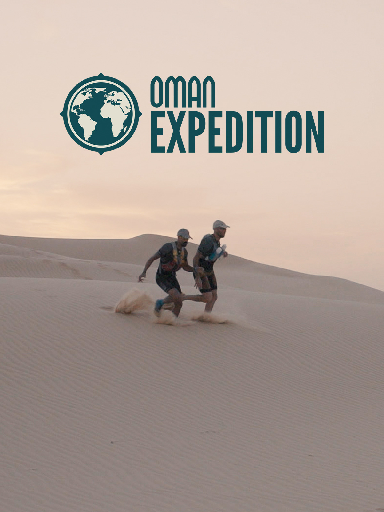
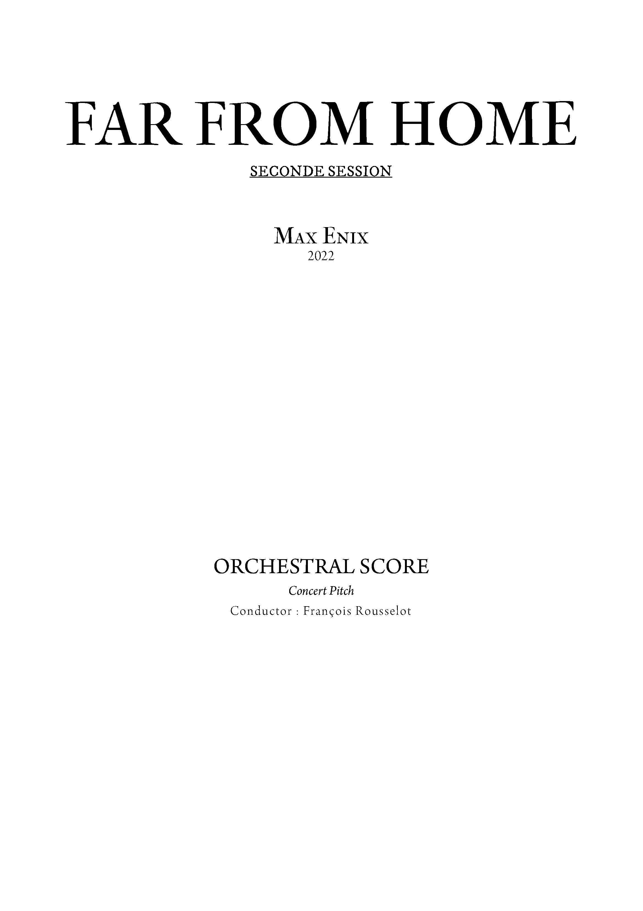

HOME
PARCOURS
COMPÉTENCES
RÉALISATION
CONTACT
Réalisations musicales
En tant que compositeur

Émotion
Épique
Hybrid
En tant que graveur musical
1 / 4

Première de couverture
2 / 4
Instrumentarium
3 / 4
Page 1
4 / 4
Page 2
❮
❯
Photographies